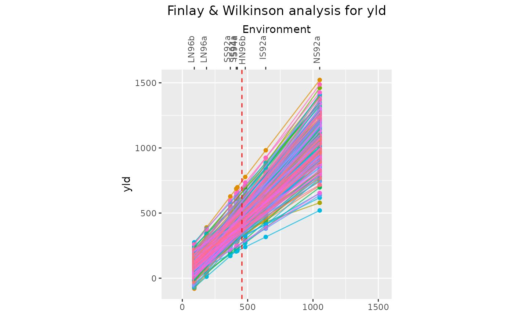
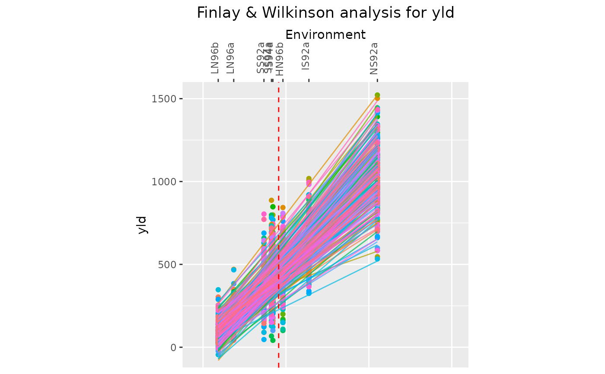
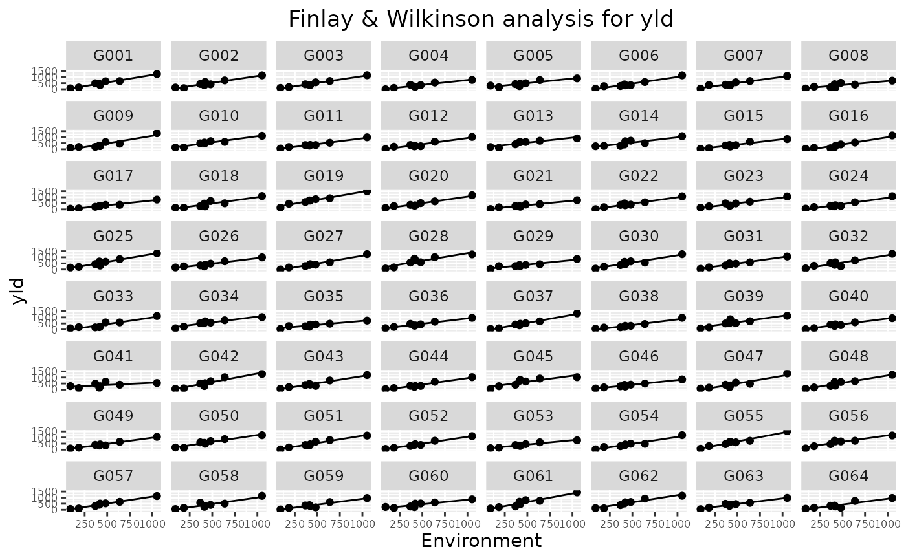
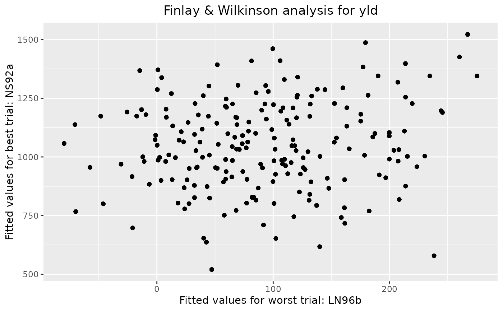
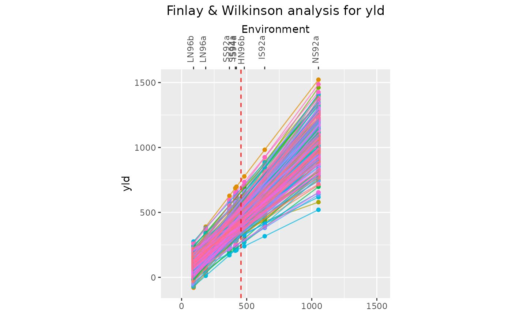
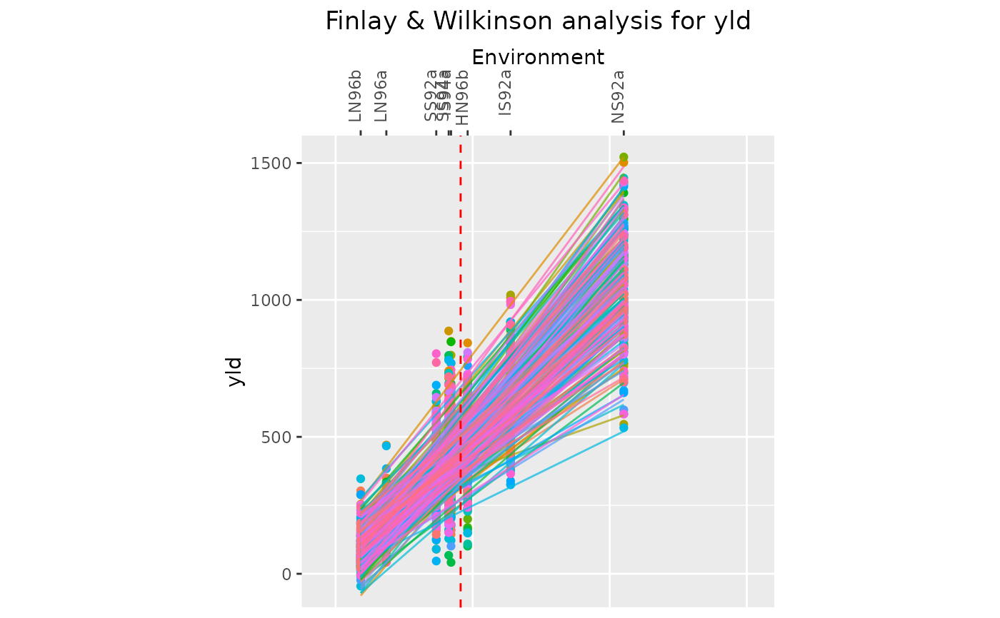
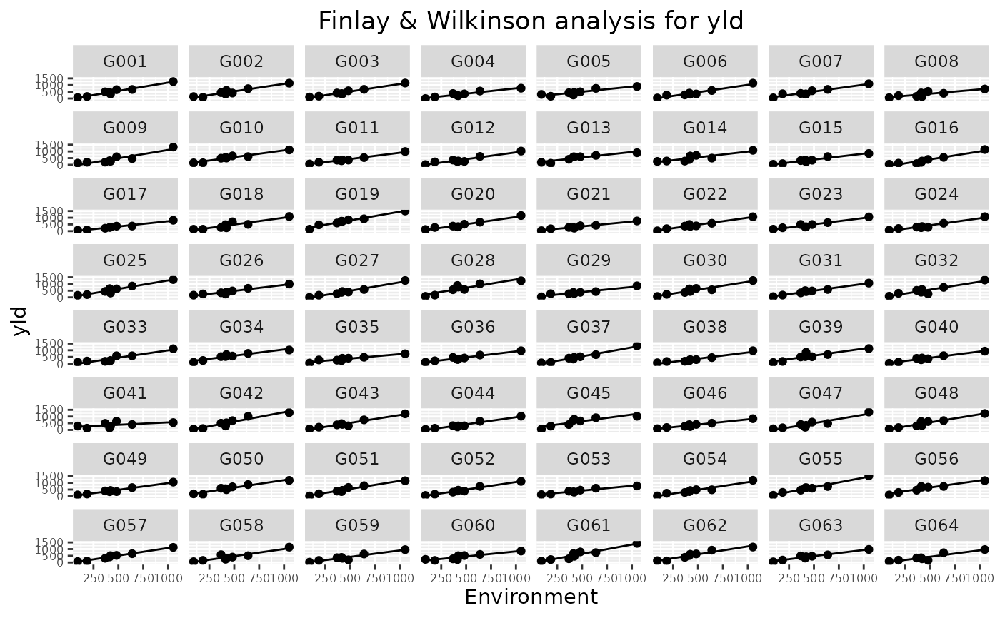
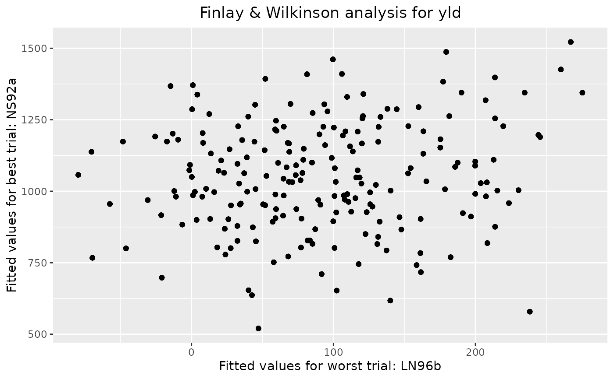

Four types of plot can be made. A scatter plot for genotypic mean,
square root of mean squared deviation and sensitivity, a line plot with
fitted lines for each genotype, a trellis plot with individual slopes per
genotype and a scatter plot of fitted values in the worst and best trial.
It is possible to select genotypes for the trellis plot using the
genotypes parameter. If there are more than 64 genotypes, only the
first 64 are plotted in the trellis plot.
Usage
# S3 method for class 'FW'
plot(
x,
...,
plotType = c("scatter", "line", "trellis", "scatterFit"),
order = c("ascending", "descending"),
response = c("predicted", "observed"),
colorGenoBy = NULL,
colGeno = NULL,
genotypes = NULL,
title = paste("Finlay & Wilkinson analysis for", x$trait),
output = TRUE
)Arguments
- x
An object of class FW.
- ...
Not used.
- plotType
A character string indicating which plot should be made. Either "scatter", "line" or "trellis" for creating a scatter plot of genotypic means, mse and sensitivities, a plot of fitted lines for each genotype or a trellis plot of the individual genotype slopes respectively.
- order
A character string specifying whether the results in the line plot should be ordered in an increasing (or decreasing) order of sensitivities. Ignored if
plotTypeis not "line".- response
A character string specifying whether in the line plot the "predicted" or the "observed" data should be plotted. Ignored if
plotTypeis not "line".- colorGenoBy
A character string indicating a column in the
TDused as input for the Finlay Wilkinson analysis by which the genotypes should be colored. IfNULLall genotypes will be colored differently.- colGeno
A character vector with plot colors for the genotypes. A single color when
colorGenoBy = NULL, a vector of colors otherwise.- genotypes
An optional character string containing the genotypes to be plotted in the trellis plot. If
NULLall genotypes are plotted. If more than 64 genotypes are selected, only the first 64 are plotted.- title
A character string used a title for the plot.
- output
Should the plot be output to the current device? If
FALSE, only a list of ggplot objects is invisibly returned.
See also
Other Finlay-Wilkinson:
fitted.FW(),
gxeFw(),
report.FW(),
residuals.FW()
Examples
## Run Finlay-Wilkinson analysis.
geFW <- gxeFw(TD = TDMaize, trait = "yld")
#> Warning: ANOVA F-tests on an essentially perfect fit are unreliable
## Create a scatter plot.
plot(geFW)
 ## Create a line plot.
plot(geFW, plotType = "line")

## Create a line plot showing observed data value for genotypes and fitted lines.
## Display trials in descending order.
plot(geFW, plotType = "line", order = "descending", response = "observed")

# \donttest{
## Create a trellis plot.
plot(geFW, plotType = "trellis")

## Create a scatter plot of fitted values for the worst and best trials.
plot(geFW, plotType = "scatterFit")

# }
## Create a line plot.
plot(geFW, plotType = "line")

## Create a line plot showing observed data value for genotypes and fitted lines.
## Display trials in descending order.
plot(geFW, plotType = "line", order = "descending", response = "observed")

# \donttest{
## Create a trellis plot.
plot(geFW, plotType = "trellis")

## Create a scatter plot of fitted values for the worst and best trials.
plot(geFW, plotType = "scatterFit")

# }